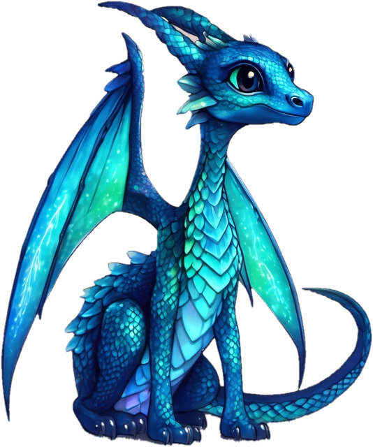
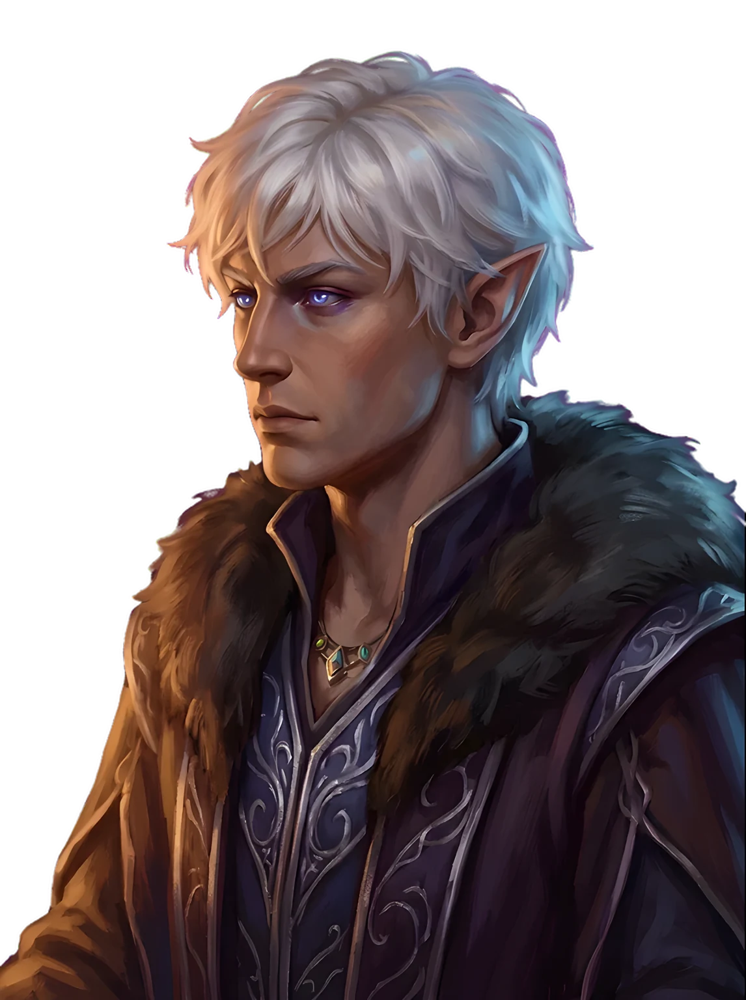

0
AMNESIAC
EX4300-48T
--:--:--
waiting for events
JUNLE
DESKTOP
Console
acc-sw-01 in rack R1
no cable
Terminal
command drills, day zero to rescue
Rehearse
your mistakes and hints, redone
Track
your guided path
Daily mix
ten minutes, keep the streak
Scenarios
something is broken, fix it
Manual
the command book
Tourney
ten timed rounds
NO CONSOLE
click the rack and plug in a console cable
DESKTOP
CONSOLE
LAPTOP
TIP
ctrl+h more
acc-sw-01
· EX4300-48T · rack R1
desk switch · unmanaged
The codex
· open to look something up
Codex of the Switch
what every ticket has taught, in one book
close
previous
next
Brief
Aa
A-
A+
Sound
Effects
Room
Key clicks
Reading and terminal font

acc-sw-01
EX4300-48T · rack R1 · U22
Front
Rear
Back to desk
Drag a cable onto a port.
‹
T to fold
Console cable
RJ-45 rollover
Console cable
mini-USB
Patch cable
Ethernet
Unplug